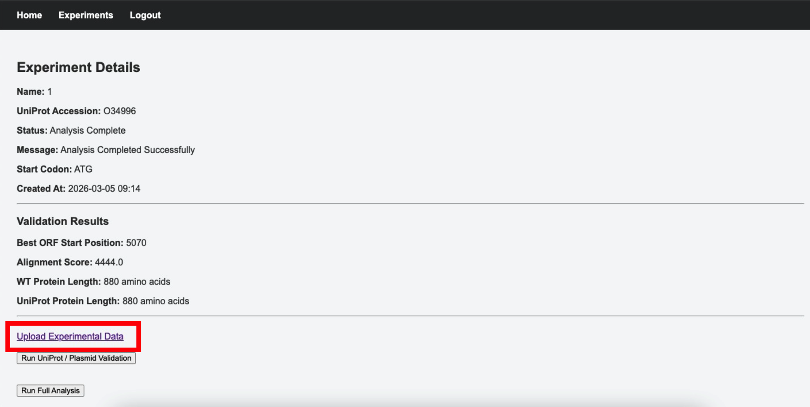
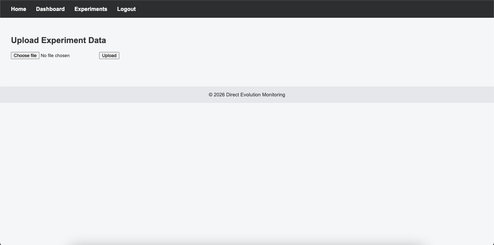

Uploading Experimental Data
The Experimental Data Parsing & Quality Control is first carried out to ensure that downstream analysis is only carried out on scientifically valid data. This also prevents potential silent failures of the analysis pipeline.
1. Navigating to the Experimental Data Upload Page
From the Experimental Details and Validation Results page, click Upload Experimental Data at the bottom of the page to be directed to the Upload Experimental Data page

2. How to Upload the Experimental Data

- Click Choose file and select your file
- Click Upload to upload the file
-
You will be automatically redirected back to the Experiment Details and Validation Results page. The Experiment Detail status and message should be now:
Status Message What it means Data Uploaded X variants accepted, X variants rejected Experimental data has been parsed and quality checked, and the number of valid and rejected rows are shown -
Click Run Full Analysis to begin the analysis process (runtime: ~2 minutes)
-
Once the analysis is completed, the Experimental Detail status and message changes to:
Status Message What it means Analysis Complete Analysis completed successfully All variants have been annotated and scored — results are now available to view -
Results and visualisations will appear in the same page, underneath Experiment Details and Validation Results
3. Experimental Data File Formats
The system only supports the following formats:
| Format | Extension | Description |
|---|---|---|
| TSV | .tsv |
Tab-separated experimental data |
| JSON | .json |
Structured JSON experimental data |
Uploading any other file type will result in an error, and both formats must contain all required essential fields (see below).
4. Required Data Fields
The uploaded file must contain the following essential columns:
Plasmid_Variant_IndexParent_Plasmid_VariantDirected_Evolution_GenerationAssembled_DNA_SequenceDNA_Quantification_fgProtein_Quantification_pgControl
If any of these columns are missing, the upload will be rejected. Additional metadata columns beyond these seven are accepted and stored without affecting analysis.
5. Parsing and Quality Control
Once the file is uploaded and analysis is running, the system automatically performs the following checks:
1. File Type Detection — The parser determines whether the file is TSV or JSON.
2. Column-Level Validation — Ensures all essential fields are present in the file.
3. Row-Level Validation — Checks each row for missing critical values. Rows that lack essential data (e.g. missing variant index, DNA quantification, protein quantification, or DNA sequence) are rejected and excluded from analysis.
6. Data Storage
After Quality Control:
- Valid rows are inserted into the SQL database
- Rejected rows are excluded from analysis
- Data is linked to the authenticated user and the specific experiment
This ensures data segregation and scientific integrity.
7. Why Quality Control is Important
Accurate DNA and protein quantification values are essential for calculating the Activity Score. The QC module rejects incomplete or corrupted entries to ensure:
- Reliable mutation classification
- Accurate Activity Score calculation
- Meaningful visualisation outputs
- Reproducible scientific results
8. Quick Data Upload Troubleshooting
| Issue | Action |
|---|---|
| Missing essential columns error | Ensure required column headers are correctly named |
| Unsupported file type | Upload only .tsv or .json files |
| Rows rejected | Check for missing values in essential fields |